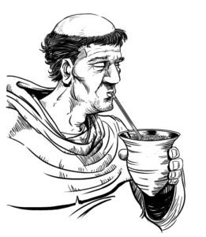

El origen del mate se remonta a los nativos guaraníes, ellos utilizaban las hojas del árbol como bebida, objeto de culto y moneda de cambio con otros pueblos.

Durante las largas travesías por las selvas, los conquistadores notaron que los guaraníes tenían mayor resistencia luego de tomar esta bebida sagrada.
Un regalo de los Dioses
Caá en lengua guaraní significa yerba, pero también significa planta y selva. Para el guaraní, el árbol de la yerba mate es el árbol por excelencia, un regalo de los Dioses. Los conquistadores aprendieron de los guaraníes el uso y las virtudes de la Yerba Mate, e hicieron que su consumo se difundiera, desde su zona de origen a todo el Virreinato del Río de la Plata. Los nativos guaraníes fueron quizás los primeros en tomar mate. Los españoles notaron que llevaban con sus armas, una pequeña bolsa de cuero con hojas trituradas y tostadas.
Los jesuitas y las reducciones
Más tarde los jesuitas introdujeron el cultivo en las reducciones, contribuyeron con su difusión, la bebida fue conocida entonces como el “té de los jesuitas”. Fueron los primeros en lograr hacer germinar las semillas de la yerba con un método secreto, que permitió cultivar Yerba Mate para abastecer las reducciones e inclusive comercializarla en otro lugares.
El esparcimiento en las reducciones
Los días domingos y los demás festivos, luego de asistir a la obligatoria misa y al rezo del Santo Rosario, los guaraníes podían disponer de algún tiempo para su esparcimiento: hacían malabares con sus caballos en la plaza, otros salían al campo a cazar, se realizaban campeonatos de destreza en el tiro con el arco y las flechas. No faltaban el mate compartido, la música, el canto y la danza, especialmente entre los niños y jóvenes. La costumbre del mate ha permanecido inalterada desde tiempos remotos y por cinco siglos de historia, arraigándose y extendiéndose a lugares lejanos.